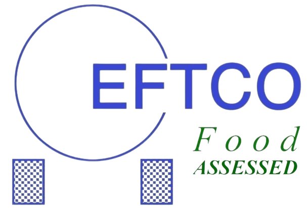
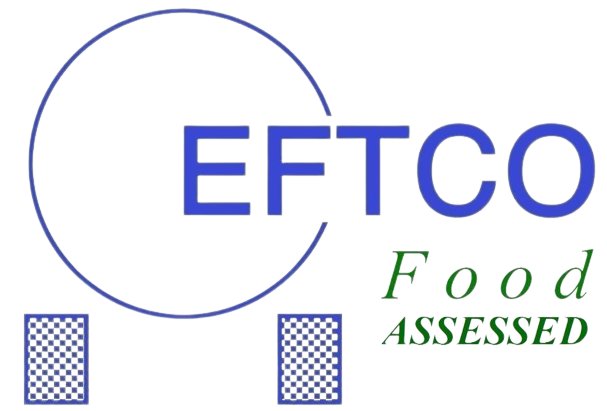
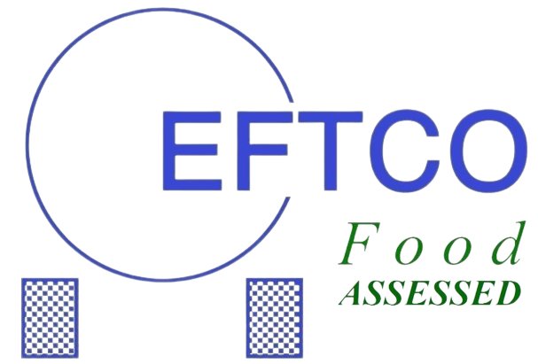

TRR Tank Cleaning offers high quality interior cleaning of tankers, tank containers, silos and IBCs. This is regularly confirmed with certificates and audits. We can also confirm this high quality for your customer on the certificate. For this purpose, we offer a range of tests that can be applied at the customer's request.
